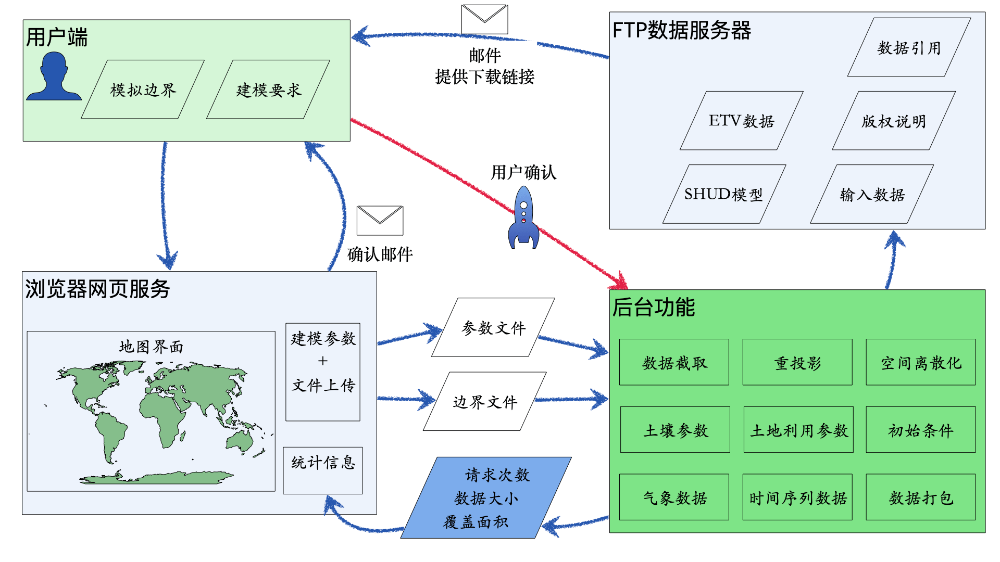

全球水文模拟云平台
方法、应用与开发
2023-04-02
前言
GHDC服务
全球水文数据云(Global Hydrologic Data Cloud, GHDC)，是一个快速获取水文建模基础数据，实现快速模型部署的云平台，可实现全球任意流域、任意大陆、任意国家范围快速水文模型部署。用户仅需提供欲建模的流域边界，GHDC即可自动化完成数据前处理，不仅生成建模所需要的基础数据（高程、土地利用、土壤质地、水系等），并能够制备SHUD(Simulator of Hydrologic Unstructured Domains)模型所需要的输入数据。用户可根据需要进行水文模拟、空间分析、数据挖掘等工作。

GHDC的工作流程
版权和权益
GHDC并不生成数据，仅提供提供数据处理服务。数据版权和权益全部归属于原始数据的作者们。当前平台处理的数据全部为开放版权(Public Domains)的数据产品——允许数据处理、修改和重发布，放弃数据版权权益。本平台不提供未使用开放版权的数据产品的数据处理。例如GLDAS, NLDAS和FLDAS数据都使用了开放版权，本平台可提供数据处理服务；但是部分再分析数据资料未使用开放版权，因此本平台无法提供数据处理服务。 若用户需要未开放版权的数据集的处理任务，请联系网站作者(shulele@lzb.ac.cn)商讨。